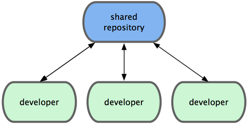

Flujos de trabajo distribuidos¶
Al contrario de otros Sistemas Centralizados de Control de Versiones, (CVCSs, Centralized Version Control Systems), la naturaleza distribuida de Git permite mucha más flexibilidad en la manera de colaborar en proyectos. En los sistemas centralizados, cada desarrollador es un nodo de trabajo; trabajando todos ellos, en pie de igualdad, sobre un mismo repositorio central. En Git, en cambio, cada desarrollador es potencialmente tanto un nodo como un repositorio --es decir, cada desarrollador puede tanto contribuir a otros repositorios, como servir de repositorio público sobre el que otros desarrolladores pueden basar su trabajo y contribuir a él--. Esto abre un enorme rango de posibles formas de trabajo en tu proyecto y/o en tu equipo.
Aquí vamos a revisar algunos de los paradigmas más comunes diseñados para sacar ventaja a esta gran flexibilidad. Vamos a repasar las fortalezas y posibles debilidades de cada paradigma. En tu trabajo, podrás elegir solo uno concreto, o podrás mezclar escogiendo funcionalidades concretas de cada uno.
Flujo de trabajo centralizado¶

En los sistemas centralizados, tenemos una única forma de trabajar. Un repositorio o punto central guarda el código fuente; y todo el mundo sincroniza su trabajo con él. Unos cuantos desarrolladores son nodos de trabajo -consumidores de dicho repositorio- y se sincronizan con dicho punto central.
Esto significa que, si dos desarrolladores clonan desde el punto central, y ambos hacen cambios; tan solo el primero de ellos en enviar sus cambios de vuelta lo podrá hacer limpiamente. El segundo desarrollador deberá fusionar previamente su trabajo con el del primero, antes de enviarlo, para evitar el sobreescribir los cambios del primero. Este concepto es también válido en Git, tanto como en Subversion (o cualquier otro CVCS), y puede ser perfectamente utilizado en Git.
Si tienes un equipo pequeño o te sientes confortable con un flujo de trabajo centralizado, puedes continuar usando esa forma de trabajo con Git. Solo necesitas disponer un repositorio único, y dar acceso en envio (push) a todo tu equipo. Git se encargará de evitar el que se sobreescriban unos a otros. Si uno de los desarrolladores clona, hace cambios y luego intenta enviarlos; y otro desarrollador ha enviado otros cambios durante ese tiempo; el servidor rechazará los cambios del segundo desarrollador. El sistema le avisará de que está intentando enviar (push) cambios no directos (non-fast-forward changes), y de que no podrá hacerlo hasta que recupere (fetch) y fusione (merge) los cambios preexistentes. Esta forma de trabajar es atractiva para mucha gente, por ser el paradigma con el que están familiarizados y se sienten confortable.
Flujo de trabajo con Gestor de Integraciones¶

Al permitir multiples repositorios remotos, en Git es posible tener un flujo de trabajo donde cada desarrollador tenga acceso de escritura a su propio repositorio público y acceso de lectura a los repositorios de todos los demás. Habitualmente, este escenario suele incluir un repositorio canónico, representante "oficial" del proyecto. Para contribuir en este tipo de proyecto, crearás tu propio clón público del mismo y enviarás (push) tus cambios a este. Después, enviarás una petición a la persona gestora del proyecto principal, para que recupere y consolide (pull) en él tus cambios. Ella podrá añadir tu repositorio como un remoto, chequear tus cambios localmente, fusionarlos (merge) con su rama y enviarlos (push) de vuelta a su repositorio.
Mecanismo del flujo de trabajo con gestor de integraciones
El proceso funciona de la siguiente manera:
-
La persona gestora del proyecto envia (push) a su repositorio público (repositorio principal).
-
Una persona que desea contribuir, clona dicho repositorio y hace algunos cambios.
-
La persona colaboradora envia (push) a su propia copia pública.
-
Esta persona colaboradora envia a la gestora un correo electronico solicitándole recupere e integre los cambios.
-
La gestora añade como remoto el repositorio de la colaboradora y fusiona (merge) los cambios localmente.
-
La gestora envia (push) los cambios fusionados al repositorio principal.
Esta es una forma de trabajo muy común en sitios tales como GitHub, donde es sencillo bifurcar (fork) un proyecto y enviar tus cambios a tu copia, donde cualquiera puede verlos. La principal ventaja de esta forma de trabajar es que puedes continuar trabajando, y la persona gestora del repositorio principal podrá recuperar (pull) tus cambios en cualquier momento. Las personas colaboradoras no tienen por qué esperar a que sus cambios sean incorporados al proyecto, -cada cual puede trabajar a su propio ritmo-.
Flujo de trabajo con Dictador y Tenientes¶

Es una variante del flujo de trabajo con multiples repositorios. Se utiliza generalmente en proyectos muy grandes, con cientos de colaboradores. Un ejemplo muy conocido es el del kernel de Linux. Unos gestores de integración se encargan de partes concretas del repositorio; y se denominan tenientes. Todos los tenientes rinden cuentas a un gestor de integración; conocido como el dictador benevolente. El repositorio del dictador benevolente es el repositorio de referencia, del que recuperan (pull) todos los colaboradores.
Mecanismo del flujo de trabajo con dictador y tenientes
El proceso funciona de la siguiente manera:
-
Los desarrolladores habituales trabajan cada uno en su rama puntual y reorganizan (rebase) su trabajo sobre la rama master. La rama master es la del dictador benevolente.
-
Los tenienentes fusionan (merge) las ramas puntuales de los desarrolladores sobre su propia rama master.
-
El dictadorEsta manera de trabajar no es muy habitual, pero es muy util en proyectos muy grandes o en organizaciónes fuertemente jerarquizadas. Permite al lider o a la lider del proyecto (el/la dictador/a) delegar gran parte del trabajo; recolectando el fruto de multiples puntos de trabajo antes de integrarlo en el proyecto.
Esta manera de trabajar no es muy habitual, pero es muy util en proyectos muy grandes o en organizaciónes fuertemente jerarquizadas. Permite al lider o a la lider del proyecto (el/la dictador/a) delegar gran parte del trabajo; recolectando el fruto de multiples puntos de trabajo antes de integrarlo en el proyecto.
Hemos visto algunos de los flujos de trabajo mas comunes permitidos por un sistema distribuido como Git. Pero seguro que habrás comenzado a vislumbrar multiples variaciones que puedan encajar con tu particular forma de trabajar.